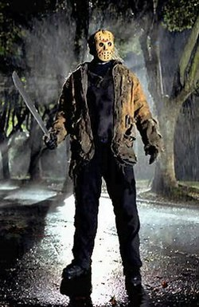
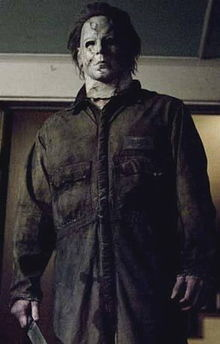
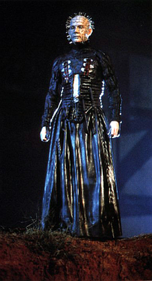
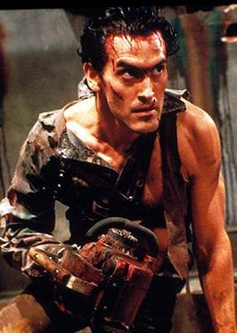
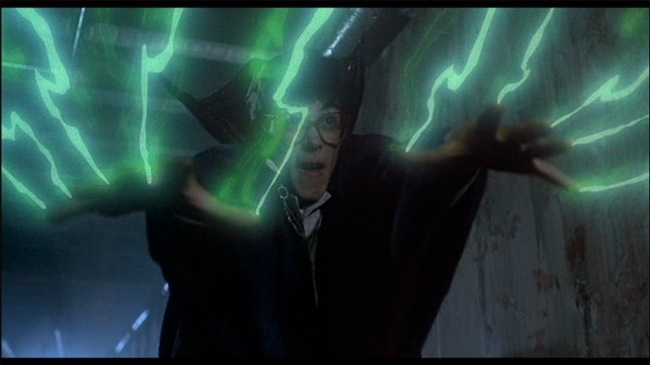

Ever since I was about six years old I have been a fan of horror movies and its characters. My first scary movie I have ever seen is Nightmare on Elm street. It was the first film to freak the heck out of me. But the more that I watched the more I have became basically immune to them. There are alot of Horror movies that I seen over the years that have peaked my interest as well as many of the main characters. Here is my list of my top all time horror motion pictures and characters since growing up.
Freddy Kruger is in the Nightmare on elm street films and he is one of my ultimate favorite horror movie characters. He is well known for his burnt face, raggedy, stripped, red sweater and brown leather hat. Freddy has the power to attack his victims while in their dreams. His weapon of choice is the leather glove that he made that has four blades with one blade on each finger tip.
Another favorite of mine is Jason Vorhees from the Friday the thirteeth movies. He is a supernatural being that has immense strength and he is virtually unstoppable. Jason is known to everyone by his iconic mask which happens to be a old hockey goalie mask. His weapon of choice is the machete that he uses to hack his victims.
Michael Myers from the Halloween series is also one of my favorites. He is very much like Jason he is also very strong and he enjoys stalking his victims. He also wears a mask and he wears a dark pair of coveralls. His favorite choice of weapon is a chefs knife.
Now here is one of my most interesting charactors in all of the horror movies that I have seen. Pin head is his name and he is an extradimensional being called a cenobite. They were originally people before turning into these demonic entities. Pinhead has an unique look to him. He has his head covered with pins, hence why he is named Pin Head and wears a long black leather robe. His weapon of choice is hooks and chains that rips people apart and then uses a device called the Lament Configuration which sucks up his victims souls.
Lastly, my choice is Ash Williams from the evil dead franchise. Although, unlike the other four characters that I have mentioned he isnt evil. However he is portrayed as a good guy. Ash was just a normal guy before his friends were possessed by the Kandarian Demon but after defeating them he turned into the ultimate badass. Ash's weapons of choice are his chainsaw and boomstick. One of his hands gets possessed by the Kandarian Demon during Evil Dead 2 so he uses a chainsaw and basically saws off his hand. He then attaches the chainsaw to his arm with the missing hand afterwards. Ash's secondary weapon the boomstick is a sawed off shot gun which he blows away baddies.
